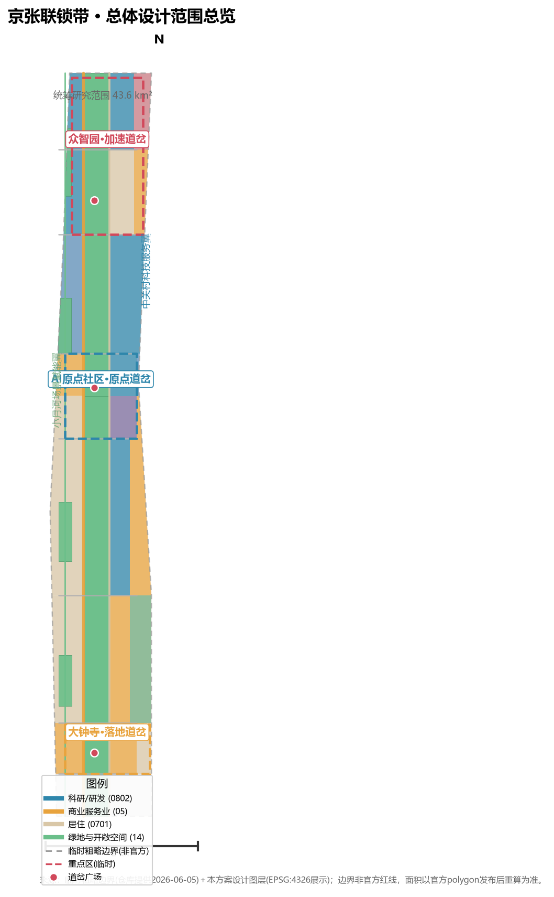
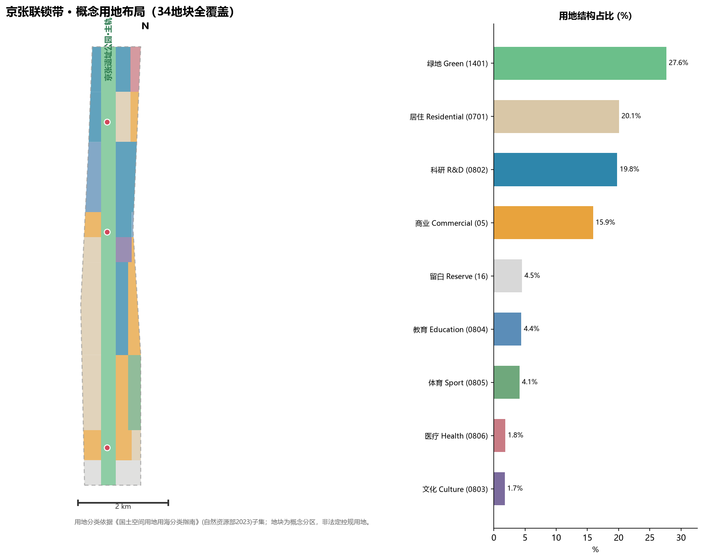
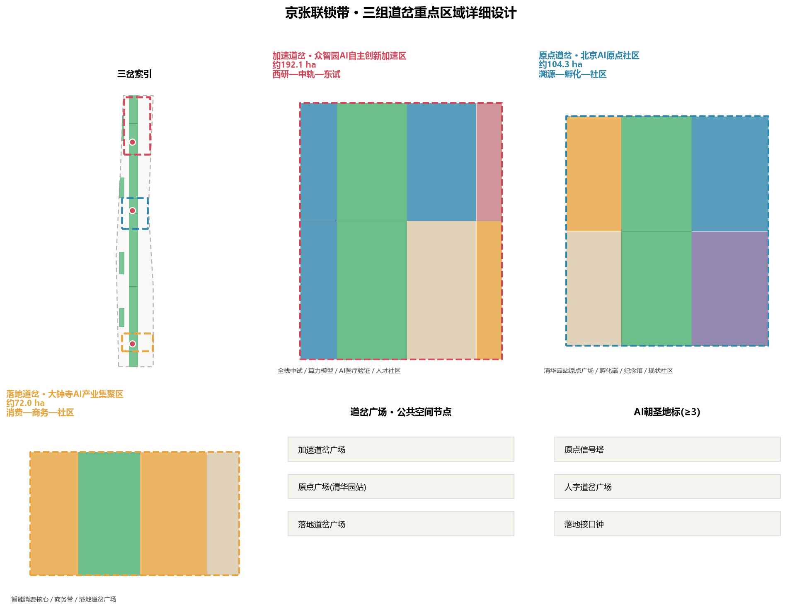
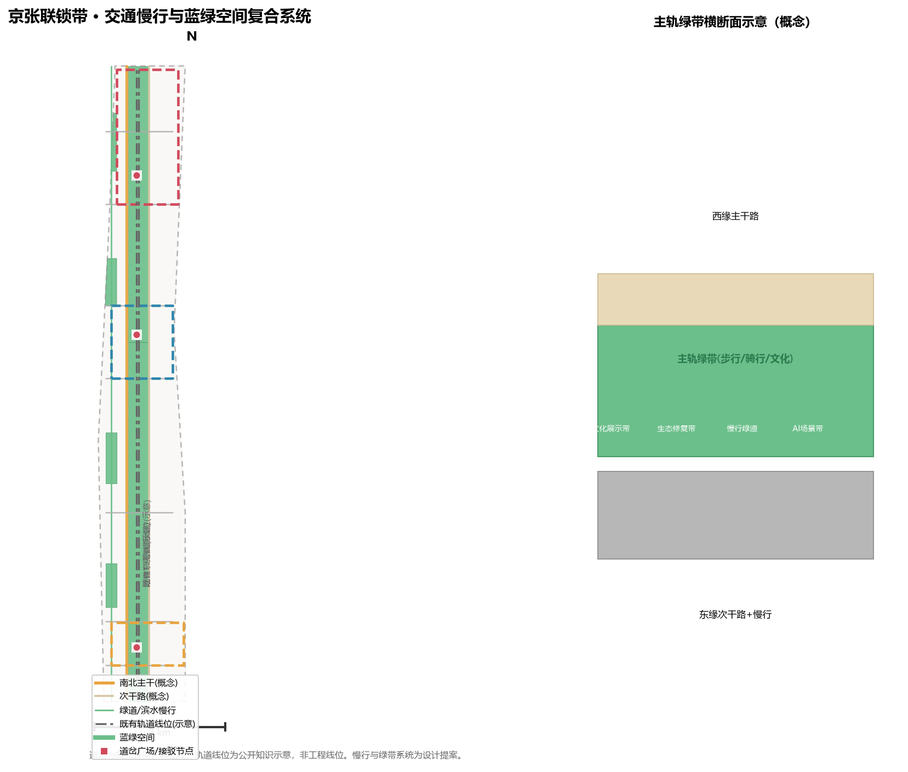
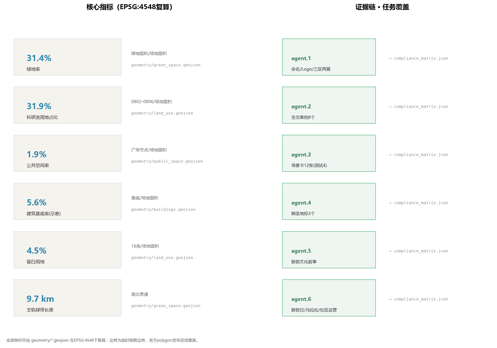

Translating railway interlocking (switch–signal–route mutual locking) into the spatial and governance logic of the AI Innovation Belt: one main route (Jing-Zhang heritage park) + three switch groups (Zhongzhiyuan / AI Origin Community / Dazhongsi) + a signal system (AI scenario nodes) + an interlocking table (open governance rules).
All metrics recomputable from geometry/*.geojson in EPSG:4548 (metrics.json)
One route, three switches, two wings: the heritage-park main route runs north-south; Zhongzhiyuan, AI Origin Community, and Dazhongsi form the three switch groups; the eastern Zhongguancun wing and western Xiaoyuehe wing interlock with the route.

34 concept parcels, full coverage without gaps/overlaps; MNR land-use classification (2023) subset; conceptual, not statutory.

Three switch groups map the "accelerate — trace — land" innovation pathway.

Conceptual two-N-S three-E-W road skeleton + main-route walk/cycle system + existing rail alignments (indicative constraints).


| Task | Response | Evidence files |
|---|---|---|
| agent.1 Concept / naming / logo | Jingzhang Interlock Belt; logo direction = renzi fork + interface mark; three positionings, five functions, three-areas-two-wings loop | proposal.md §3 / compliance_matrix.json |
| agent.2 AI ecosystem | 8 global cases distilled into transferable mechanisms; full-stack piloting, origin incubation, Zhongguancun capital interface | proposal.md §3.4 / §5.1–5.2 |
| agent.3 AI+ scenarios | 12 scenario cards (T1–T4 test, E1–E8 experience); 6 personas | proposal.md §6 / metrics.json |
| agent.4 Public space / landmarks | 3 switch plazas; Origin Signal Tower, Renzi Switch Plaza, Landing Bell; honor display system | geometry/public_space.geojson / proposal.md §9 |
| agent.5 Culture narrative | Zhan Tianyou renzi line → Zhongguancun → AI Origin; rail/switch/bell wayfinding; interlock narrative | proposal.md §3.1 / §9 |
| agent.6 Long-term operation | Interlock Day (May 18), AI open-source marathon, Switch Forum, developer community, three-grade scenario opening | proposal.md §10 |
Key sources
| Qualification announcement | Haidian Branch BPMNR 2026-05-09 (formal-ready) |
| Agent taskbook excerpt | User-provided cleared doc 2026-05-18 |
| Scope/key-area polygons | Repo provisional boundary (provisional_only) |
| Land-use / design layers | AI-generated design (agent_generated_design) |
Key assumptions
| A-CONTROLS-001 | Regulatory intensity pending official confirmation; conceptual only |
| A-BOUNDARY-001 | Provisional boundary; recalculate when official polygons arrive |
| A-BUILD-001 | Footprints are indicative blocks, not demolition/renovation conclusions |
| A-SCENARIO-001 | Scenarios/events are concepts, not confirmed arrangements |
Package state: ready_for_review (finalize passed); self-check/preflight results per self_check.json and CI.
| Deterministic validation | Local finalize PASS; self-check re-run against latest repo rules |
| Spatial review | land_use full coverage without gaps (EPSG:4548 GAP=0) |
| Bilingual contract v1 | proposal.md ⇄ proposal.en.md equivalent; figures paired zh/en |
| Visual review | This board includes all required sections and data-metric indicators |